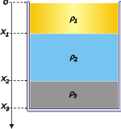

NO ME SALEN
EJERCICIOS RESUELTOS DE FÍSICA DEL CBC
FLUIDOS - PRINCIPIO DE ARQUÍMEDES |
|

|
| |
FIS H.10) En la figura se muestra un recipiente abierto de un metro de altura que contiene tres líquidos inmiscibles.
Determine la presión manométrica en el fondo del recipiente sabiendo que las densidades son 1 g/cm³; 0,8 g/cm³ y 13,6 g/cm³; y que x1= 20 cm, x2= 50 cm y x3= 1 m.
a)
148,7 kPa, b)
47,4 kPa, c)
34,6 kPa,
d)
3,46 kPa, e)
72,6 kPa, f)
46,8 kPa,
|
 |
|
Este ejercicio trae una trampa maligna. Fijate que no te dice cuál de los fluidos tiene la densidad que tiene, si el de arriba, el del medio o el de abajo. De hecho, las densidades vienen ordenadas en el orden vertical incorreco. Sos vos el que tiene que saber que los fluidos más densos se van al fondo y los menos densos flotan arriba. Arquímedes de acá a la china (yo te puse colores adecuados, en la guía viene en grises, más maquiavélico). De modo que:
ρ1 = 0,8 g/cm³ (aceite Cocinero, seguramente)
ρ2 = 1 g/cm³ (agua de lluvia o de la canilla)
ρ3 = 13,6 g/cm³ (mercurio, carísimo)
Si te percataste de eso, el resto del ejercicio es una papa, sólo hay que aplicar el principio general de la hidrostática. Como te piden la presión manométrica, arriba de todo la presión vale cero (no vayas a poner 1 amósfera porque vas frito en el aceite).
Prx1 = ρ1 . g . x1 + Pr0 =
800 kg/m³. 10 m/s² . 0,2 m = 1.600 Pa
Prx2 = ρ2 . g . (x2 — x1) + Prx1 =
= 1.000 kg/m³. 10 m/s² . 0,3 m + 1.600 Pa = 4.600 Pa
Prx3 = ρ3 . g . (x3 — x2) + Prx2 =
=
13.600 kg/m³. 10 m/s² . 0,5 m + 4.600 Pa = 72.600 Pa
|
|
|
|
Prx3 = 72,6 kPa |
respuesta e) |
|
|
|
| No era para llorar. (Acordate que la nomenclatura correcta de presión es p). |
|
|
| DESAFÍO: ¿Y si nos pedían la presión barométrica? |
|
 |
| Algunos derechos reservados.
Se permite su reproducción citando la fuente legítima, o sea, este sitio. Última actualización
ago-17. Buenos Aires, Argentina. |
|
|
| | |
|
|